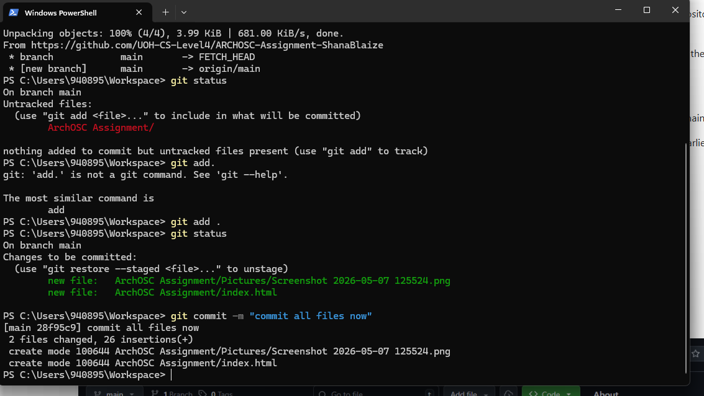

Intro to GitHub
Setting up a local repository, connecting to GitHub, and making your first push.
Step 1 — Setting Up the Workspace
I created a folder in my OneDrive workspace called ArchOSC Assignment with a sub-folder called pictures to store all my screenshots.

Step 2 — Initialising a Local Git Repository
I opened the terminal by right-clicking inside my workspace folder and ran the following command to initialise an empty Git repository:

Step 3 — Creating a Repository on GitHub
I created a new repository on my GitHub account then linked my local repository to it using:

Step 4 — Pulling from GitHub
Before pushing any files I pulled the information GitHub generated when the repo was created using:
I was redirected to the GitHub sign-in page to authenticate before the pull completed.

Step 5 — Creating the Website in VS Code
I opened Visual Studio Code, wrote the code to create a website, saved it to my ArchOSC Assignment folder, then opened it in the browser to confirm it displayed correctly.

Step 6 — Staging and Committing Files
I ran git status to see which files Git had detected, then added all untracked files and committed them:
Running git status again showed the files in green, confirming they were now tracked.

Step 7 — Renaming the Branch
To match GitHub's default branch name I ran:

Step 8 — Pushing to GitHub
With everything committed I pushed the repository to GitHub:

Step 9 — Customising the Website
I made further improvements — changed the background colour, changed the text colour, and added my name — then committed and pushed the updates.